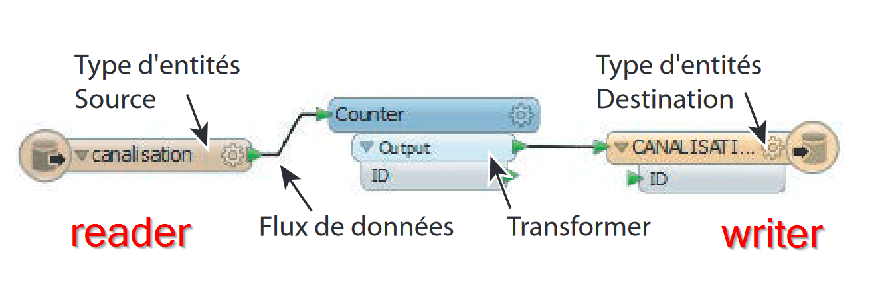
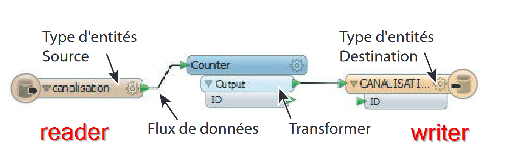

Introduction
Ce cours d’introduction à FME a été créé dans le cadre du CAS Coordination BIM de l'HEPIA (Haute École Du Paysage, D'ingénierie Et D'architecture De Genève).
Objectif du cours
Ce cours a pour objectif de montrer l’utilisation de base d'un logiciel ETL (Extract - Transform - Load) dans le cadre de la gestion de données BIM.
Le logiciel ETL utilisé pour ce cours est FME, un logiciel largement
utilisé dans le domaine des SIG pour le transfert et la
manipulation des données spatiales (ou non-spatiales).
Monter en compétences dans l'utilisation d'un nouveau
logiciel n'est pas une chose aisée, surtout en une seule
journée de cours. De plus, la gestion
des données BIM nécessite
de déjà bien connaître les formats BIM
et leurs structures (IFC
par exemple). Ce cours n'a
pas la prétention de former des data managers, mais plutôt
de sensibiliser les participants à ces problématiques et
solutions techniques.
La première partie du cours abordera l'utilisation de ce logiciel par le bais d'exemple et d'exercices. Puis, nous aborderons dans la seconde partie le transfert et la manipulation des données BIM.
Matériel du cours
Les slides ainsi que les exercices sont déposés sur mon repository github :
Prérequis
Ce cours est destiné à des personnes ayant l’habitude de travailler avec des outils informatiques, mais sans pour autant avoir des connaissances en gestion de données.
FME 2020 ou plus récent doit être installé sur les ordinateurs utilisés pandant cette journée de formation.
FME
FME est l'outil incontournable pour l'échange, la
transformation, le chargement et le contrôle des données
spatiales vectorielles ou raster. Capable
de lire et d’écrire plusieurs centaines
de formats différents (vectoriels, raster et
non-spatiaux), FME s'impose comme un standard incontournable
dans la manipulation de géo-données.
Capable
de lire et d’écrire plusieurs centaines
de formats différents (vectoriels, raster et
non-spatiaux), FME s'impose comme un standard incontournable
dans la manipulation de géo-données.
Grâce à une interface graphique intuitive (Workbench), vous pouvez concevoir vos processus de traitement de données sans une seule ligne de code.
Vous pouvez télécharger FME Desktop et le tester durant 14 jours dans votre environnement en cliquant ici ou bien demander une version "maison" valable pendant une année ici.
Présentation des éléments clés de FME
FME-Workbench : l’atelier de conception FME-Workbench
est la pièce centrale de FME : le studio de conception des
traitements. FME-Workbench fournit un environnement totalement
graphique pour concevoir tous types de traitements, des plus
simples aux plus complexes.
Dans FME-Workbench, les traitements sont composés de quatre
composants graphiques :
- les types d’entités des jeux de données source
- les types d’entités des jeux de données destination
- des transformers, unités de traitement,
- des flux de données qui relient les types d’entités source, les transformers et les types d’entités destination
 

source (texte + image) : Veremes
Le workspace FME est le code (graphique) qui permet d'effectuer une transformation. Ce code est interprété, puis executé par le FME-Workbench. Le workspace est un simple fichier texte qui peut être transmis à tout autre utilisateur qui dispose de FME pour l'executer. Dans la suite de ce cours, certains exercices débuteront avec un workspace FME déjà créé, d'autres avec un workspace totalement vide.
Installation
Les postes que vous utilisés ont déjà FME installés.